Je vois d'ici vos têtes, " Mais ouais, il est bien gentil Alphare, mais le mec qui a fait la vidéo c'est un des développeurs", je dois alors vous rappeler qu'ici, on part de Zéro et que même le plus inexpérimenté arrivera à faire ce tuto, je vous le promet ^^
Sur ce, et sans plus tarder, nous allons commencer ce tutoriel. :pirate:
Dans cette partie, je vais vous expliquer comment préparer sa scène avant de se lancer:
On commence par ouvrir Blender :p
Vous avez normalement un cube, une lampe, et une camera, le tout en vue de haut. Mettez vous en vue de face (1 du pavé numérique), et sélectionnez votre cube.
Votre écran devrait ressembler à ça (sauf interface de l'ordinateur bien sur ^^ )
Vous allez dans le panneau material, et vous mettez les mêmes réglages qu'ici (Vous pouvez bien entendu régler la couleur à bon escient) :
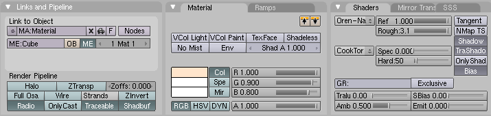
Viens ensuite l'éclairage:
Votre éclairage sera composé de 2 lampes:
-Une area lamp :
Sélectionnez la lampe (clic droit),
Réglez ensuite comme ceci (sans oublier de passer en "area lamp" dans le panneau preview ;) ):
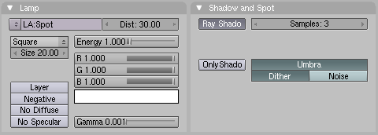
-Un sun.
Dupliquez à l'aide de "Shift D", et placer comme ceci (n'oubliez pas de passer en sun):
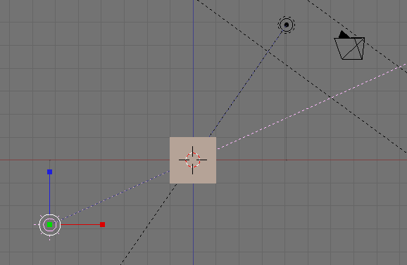
(Vous avez remarqué le petit liserai bleu qui "orne" les trajets de mes lampes, Il indique que mes lampes sont toujours dirigées sur le cube, pour se faire, sélectionnez une lampe, puis "Shift clic droit" sur le cube et "ctrl + t", choisissez "Track to". Recommencez l'opération pour l'autre lampe.)
Puis:
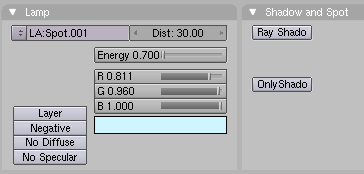
N'oubliez pas de décocher Ray Shadow !
On s'occupe du cube:
En mode édition (touche tabulation), faites W > bevel > Recursion 3 > Et mettez le curseur à votre guise.
Ensuite, dans le panneau d'édition (F9), cliquez sur "Set Smooth". (Lissage de l'objet)
Maintenant, la touche finale (de cette partie :p )
Allez dans le panneau world (la petite sphère bleue) et mettez comme couleur:
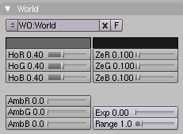
Voilà cette partie est terminée, n'oubliez pas d'enregistrer ! :D
Avec le cube de sélectionné, peu importe la vue, vous faites Barre d'espace > Add > Empty ( Empty voulant dire vide, et en l'occurrence objet vide )
Faites Alt+R > Clear rotation (pour réinitialiser la rotation (très important)) Puis Alt+G > Clear location (pour réinitialiser la position (très important aussi si vous avez bougé le curseur ^^ ))
Votre scène devrait ressembler à ça (en vue de caméra (0) et "mode fil de fer" (Z)):
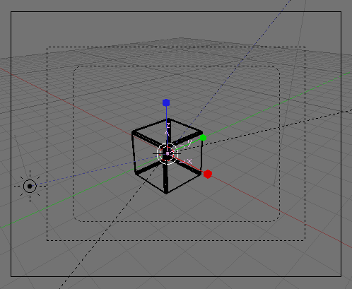
Si non Il vous faut revoir les étapes de ce tuto :-°
Vous allez me dire:
Et ça sert à quoi votre Emptruc là ?
Eh bien, il va nous servir à influencer le thème principal de ce tuto: Le modifier Array !. (Tadam)
...
Je vous explique:
Prenez votre cube et allez dans le panneau d'édition (si ce n'est déja fait).
Cliquez sur "Add Modifier" et choisissez "Array"
Oh magie ! Un autre cube sur l'axe X ! (Trop bien) :-°
Placez votre curseur sur la barre horizontale qui sépare les panneaux d'édition des boutons "Object mode" et autres. Faites un clic continu (restez appuyé), sur la barre, puis tirez ver le haut puis relâchez jusqu'à ce que le modifier soit découvert entièrement, puis réglez comme ici:
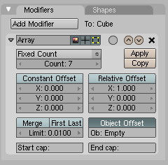
Ben ça fait plus rien ! Pourquoi ?
C'est là que vient la réponse à ma question: L'Empty influence le modifier Array en fonction de son emplacement, de sa rotation et de sa taille, par rapport au cube.
Or, Le cube et l'Empty on le même emplacement, la même rotation, et la même taille, d'où l'absence d'effet. :p
C'est fini pour cette partie, et j'attaque la suivante, où vous apprendrez à faire de zolies images et animations... :D :lol:
Dans cette partie, on attaque l'animation. "Arg, c'est toujours long et énervant l'animation", c'est ce que je pensais aussi avant de faire l'animation...jusqu'à m'apercevoir que c'est en fait plutôt amusant. ^^
Trêve de blabla, On y va (ouah je suis balèze; ça rime ( :p ))
Nous allons utiliser les "IPOs Keys" pour notre animation.
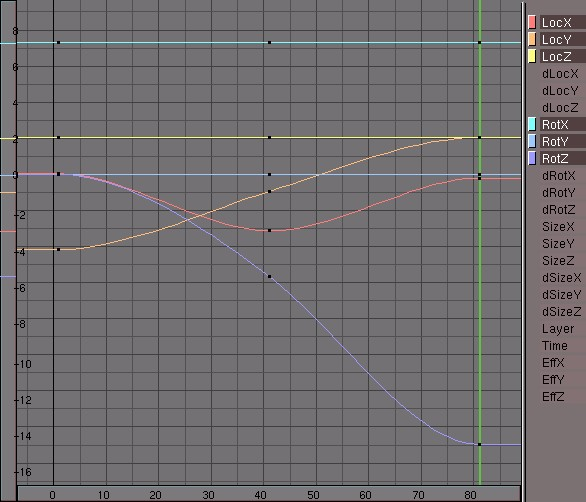
Sélectionnez votre Empty, faites "i" > locRotScale avec le curseur dans la vue 3D.
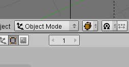
Allez jusqu'à la frame n°20 en vous aidant des touches directionnelles de votre clavier.
Ensuite, faites "G" (déplacer) puis "Y" (sur l'axe Y) avec "Ctrl" appuyé, puis déplacez votre cube de 3. Les unités vous sont montrées à la place des boutons "Object mode" etc..., quand vous déplacer votre Empty.
Ensuite refaites "i" > LocRotScale.
En effet, en faisant LocRotScale, vous indiquez à l'ordinateur les informations sur son emplacement, sa rotation, et sa taille par rapport aux repères tridimensionnels.
Arf ... repères tridimensionnels, c'est quoi ce truc ?
Eh bien il s'agit des axes X, Y et Z (abscisse, ordonnée et côte) ;)
Et maintenant, revenez à la frame 1, et faites "Alt+A", ce qui va lancer l'animation.
OH ! Magie ! Ca ce développe ! :p :lol: :magicien:
Vous avez les bases de la manipulation du modifier Array, du moins pour ce genre d'animations. :)
Cette partie est terminée, le tuto aussi, mais des astuces sont dans la suivante :D .
J'ai ajouté une autre partie qui vous dira comment transformer votre animation en vidéo.
Si vous voulez une rotation "Bizarre", appuyez 2 fois sur "r" ( rotation ), ce qui enclenche le Trackball. (Très pratique)
Vous pouvez dupliquer l'Empty ( avant modifications par Ipos ) et dupliquer aussi le modifier "Array" , en mettant le nom de l'Empty n°X (visible dans le panneau "Modifier).
'Pis une petite image fabriquée par mes soins en moins de 5 minutes (cliquez pour agrandir) :
Vous avez fait votre animation, vous avez envie d'en faire une vidéo : qu'à cela ne tienne ! Suivez mes instructions ! :D
Allez dans le panneau "Scène/Render" (F10).
Vous avez face à vous ce qui devrait ressembler à ça :
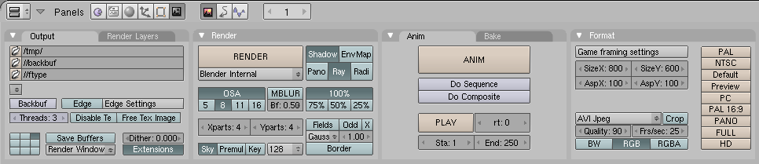
Première chose à faire :
Régler le "dossier de sortie", c'est-à-dire le dossier où la video s'enregistrera. Pour cela, cliquez sur l'icone en haut à gauche du panneau, en dessous de "Output" , où il est inscrit "/tmp/" sur mon image.
Vous devez normalement voir apparaître un explorateur de fichiers. Choisissez votre dossier de sortie sur votre ordinateur.
Ensuite, réglez la taille de l'image avec les boutons "100%", "75%","50%","25%", ou avec les formats du panneau "Format". ( Vous pouvez aussi rentrer votre propre format dans les boutons "Size X" (Largeur) et "Size y" (Hauteur)).
Chose importante, réglez à quelle frame (image) vous voulez commencer l'animation et la terminer. Les boutons "Sta : " ( Start (ce qui signifie "Début" ^^ )) et "End : " (ce qui signifie "Fin" :lol: )
Et enfin, la touche finale ==============>> appuyez sur le bouton "Anim".
Vous verrez le rendu de la première image de l'animation, puis la seconde, etc ...
Voilà une étape importante dans l'animation : Le flou de vitesse, autrement appelé flou vectoriel, ou encore "Vector Blur". :p
Voici le résultat d'une image que vous auriez pu faire, mais avec le blur :) :
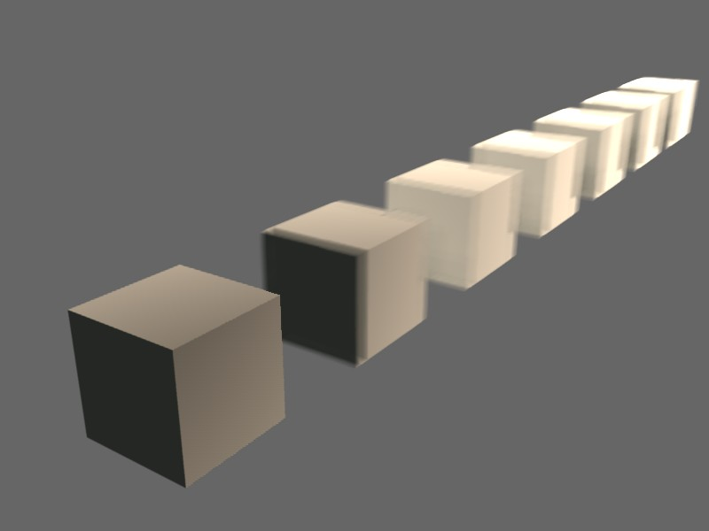
Vous l'avez remarqué, le premier cube n'est pas flou.
Pourquoi il est flou le second ?
Parce que le second est en mouvement, alors que le premier ne l'est pas.
Passez rapidement votre main devant vous, elle apparaitra floue.
Ouais mais pourquoi le dernier cube est plus flou que les autres?
Curieux hein? ^^
Eh bien tout simplement parce qu'il est plus en mouvement que les autres. ;)
Comment on fait ?
Il vous faut déjà être à une frame où un objet est en mouvement.
Ensuite, on fait ce que je dis :p :
Clic droit sur la barre horizontale (voir image ci-dessous), et choisi "Split Area", mis la barre au milieu, puis clic gauche. :)
Image:
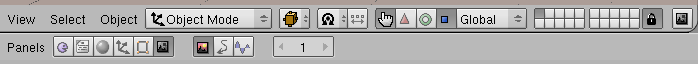
Ce qui va nous intéresser pour l'instant, c'est les "nodes" (en anglais : nœuds). :p
Allez dans la petite icône ( Le grillage ) et choisissez "Node éditor".
Cliquez sur "Use nodes", puis sur "Free Unused".
Vous voyez s'afficher à l'écran, 2 nœuds :
Render layer : Ca montre quel calque de rendu on utilise.
Composite (Com) : C'est la que ce composent les autres nœuds.
Déplacer sur la droite votre Composite pour qu'il y ai plus d'espace entre les deux nœuds. ;)
Faites un clic appuyé à coté de la "corde blanche" qui sépare les 2 n?uds, puis, toujours avec le clic appuyé, passer sur la corde puis relâchez le clic. La corde s'est effacée, séparant les deux nœuds. :)
Ensuite faites : Barre d'espace > Add > Filter > Vector Blur . Déplacez ensuite votre nouveau n?ud pour qu'il soit au milieu des 2 autres.
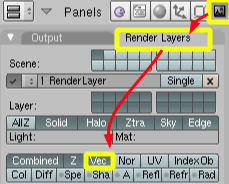
Cliquez sur les boutons dans l'ordre indiqué par l'image.
Si j'active "Vec", c'est pour dire que, dans les n?uds, un canal "Speed" va s'ajouter sur le n?ud "Render layer" pour que l'on puisse le relier avec la n?ud de "Vector blur".
Reliez maintenant les 3 nœuds entres eux et paramétrez comme sur l'image ci dessous :
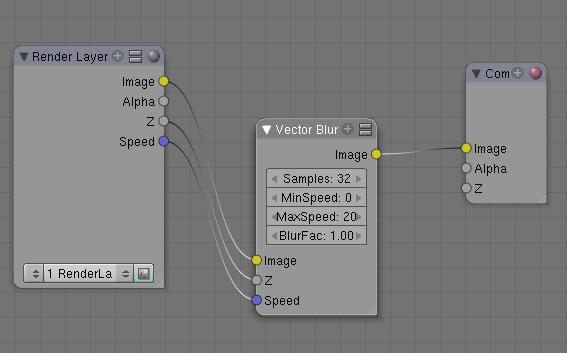
MaxSpeed donne la valeur maximale de la puissance du flou. Si le flou a une valeur de 0, il n'y a pas d'effet. ;)
Les "samples" servent à flouter le grain, plus le nombre est élevé, moins le flou est "graineux" (et plus le temps de calcul est long ^^ )
BlurFac sert à déterminer le rayon de l'effet du flou.
Pour relier les nœuds entres eux cliquez sur les boutons ronds de sortie,
Puis allez jusqu'à l'autre bouton, et relâchez.
Ensuite activez "Do Composite", dans le panneau de rendu :
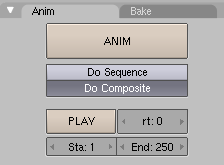
Voilà, ça marche ! ;)
J'espère que ce tuto vous a aidé et vous a plu. :)
C'est mon premier tuto et je me suis appliqué pour le faire... ^^
{kind=link}
{kind=link}